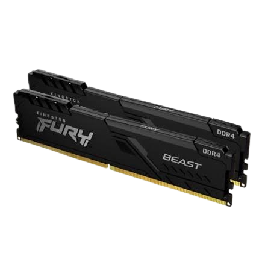

La memoria es el sistema de archivo que permite a un ordenador guardar, recordar y recuperar información. Sin ella, el procesador sería muy rápido pensando, pero olvidaría cada dato al instante y tendría que empezar desde cero a cada segundo.
Para que todo funcione bien, el equipo combina distintos tipos de almacenamiento según lo que necesite en cada momento: unos espacios ultrarrápidos para los datos que está usando ahora mismo y otros de gran capacidad para conservar tus archivos a largo plazo. Gracias a este equilibrio, el ordenador puede trabajar a toda velocidad sin perder nada de lo que haces.
MEMORIA RAM |
DISCO DURO |
BIOS |
|
La Memoria RAM es la mesa de trabajo del ordenador. Es una memoria ultrarrápida donde el equipo guarda temporalmente los datos y programas que estás utilizando en ese preciso momento para que el procesador pueda acceder a ellos al instante. Cuanta más memoria RAM tenga un dispositivo, más grande será esa mesa y más cosas podrás tener abiertas a la vez sin que el sistema se vuelva lento. Eso sí, es una memoria temporal: en cuanto apagas o reinicias el ordenador, la mesa se limpia por completo y todo lo que había en ella se borra. |
El Disco Duro es el armario gigante del ordenador. Es el componente encargado de guardar de forma permanente todos tus archivos, como fotos, vídeos, documentos, videojuegos y el propio sistema operativo. A diferencia de la memoria RAM, el disco duro no olvida nada cuando apagas el equipo, por lo que todo sigue en su sitio la próxima vez que lo enciendes. Hoy en día existen los discos tradicionales (HDD) y los modernos SSD, que son mucho más rápidos y hacen que el ordenador arranque y cargue tus partidas en pocos segundos. |
La BIOS es el despertador y entrenador del ordenador. Es un pequeño programa grabado en un chip de la placa base que se activa justo en el segundo en que pulsas el botón de encendido, antes de que cargue nada más en la pantalla. Su misión es comprobar rápidamente que todas las piezas importantes (como el procesador, la memoria RAM o el teclado) estén conectadas y funcionen bien. Si todo está en orden, despierta al sistema operativo desde el disco duro para que puedas empezar a usar el equipo con normalidad. |